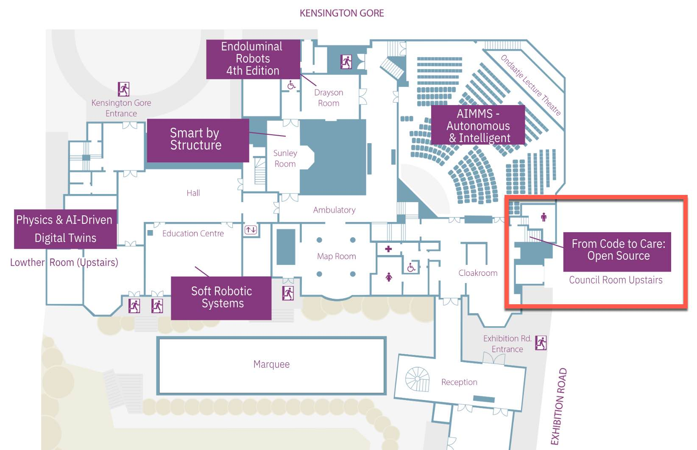

Open-source software and hardware for medical robotics have advanced rapidly over the past two decades, driven by close collaboration between academia, healthcare centres, and industry. Platforms such as the dVRK, 3D Slicer, ITK, MONAI, ROS, and a growing ecosystem of community-maintained drivers, simulators, and AI toolkits have lowered the barrier to entry for researchers and clinicians, accelerated prototyping, and enabled reproducible, transparent science. As these tools mature, they are increasingly being used not only for research but as the foundation for clinical translation and commercial medical devices.
Yet the path from code to care remains challenging. Open-source projects in medical robotics must contend with regulatory requirements, long-term maintenance and sustainability, fragmented hardware ecosystems, data privacy and quality, and the realities of translating prototypes into safe, validated clinical products. This workshop brings together engineers, researchers, clinicians, regulators, and industry partners to share success stories, discuss the open challenges, and chart the future directions of open-source development in medical robotics.
Through keynote talks, technical presentations, a panel discussion, and a poster session with awards, the workshop offers a space to learn from concrete projects, debate trade-offs around openness and clinical readiness, and grow a durable community committed to advancing surgical and medical robotics for the benefit of patients worldwide.
26th June 2026 · London, UK
Hosted as part of the Hamlyn Symposium on Medical Robotics 2026.
